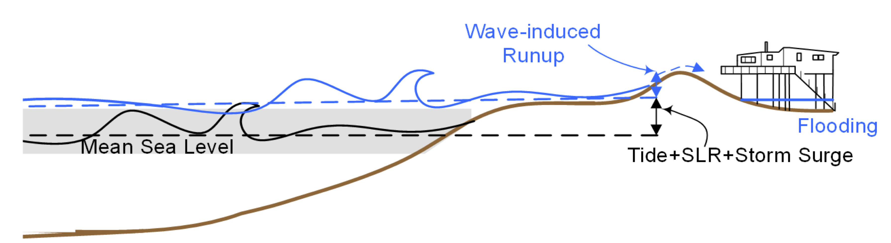

ESTCP PROJECT¶
Objective¶
{kind=link}
This project will compare model predictions of coastal flooding at representative military facilities, with the goal of identifying the best practice for any facility. Unlike previous efforts, this project will consider a suite of open-source numerical models, which include all of the relevant physics that contribute to total water levels, such as sea level rise, tides, wind-induced surge, wave runup, and infragravity motions. Total water levels will be predicted for selected tropical cyclones with varying tracks and intensities, to represent the full range of possible forcings at each location, and at facilities on the U.S. Gulf and Atlantic coasts and in the Pacific Ocean, to represent the full range of coastal geographies. Model performance will be compared with respect to inundation depths, timing and duration of flooding at each installation, as well as computational costs. This comparative assessment will inform the use of these models for predictions of total water levels at any facility, thus enhancing military installation readiness and resilience, in direct support of DoD and ESTCP priorities.